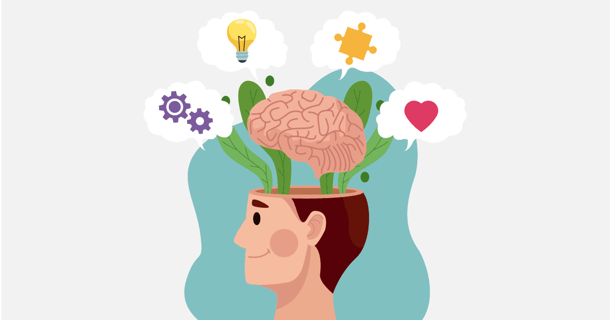

_Valeska Viana
Nada mais é que reconhecer e administrar suas emoções e a dos outros também, afinal, nos relacionamos com eles.
Emoções são formas como reagimos às situações da vida, portanto é natural senti-las nos mais diversos momentos. Porém, quando não são bem gerenciadas, podem levar a atitudes impensadas e prejudicar seus relacionamentos e seu bem-estar.
Quem tem inteligência emocional tende a tomar decisões com mais controle, enfrentar adversidades com mais calma e clareza e ter relacionamentos mais saudáveis.